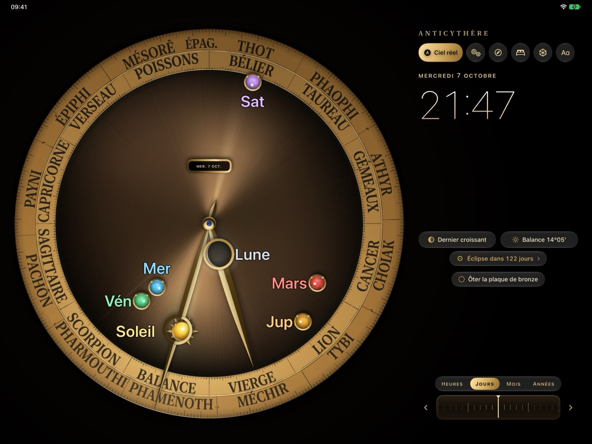

Le cadran
Tournez la manivelle
Le Soleil, la Lune et sa phase, Mercure, Vénus, Mars, Jupiter et Saturne parcourent l'anneau du zodiaque. Sur iPhone et iPad, une molette fait défiler les heures, les jours, les mois lunaires et les années ; sur Apple Watch, la Digital Crown sert de manivelle.
Touchez un astre pour sa fiche : signe, position, mouvement et, pour la Lune, la phase, la fraction éclairée et l'âge. Inscriptions du zodiaque et des mois égyptiens dans votre langue ou en grec ancien.
